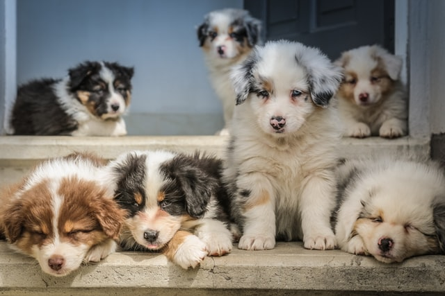
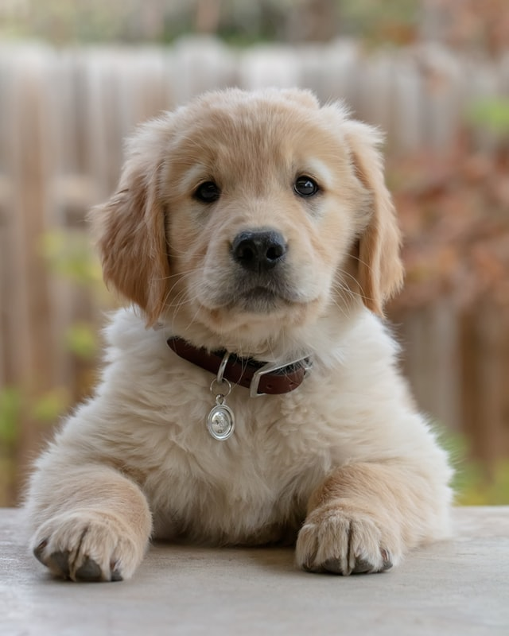

개는 식육목 갯과(Canidae) 개속(Canis)의 늑대(Canis lupus) 가운데 특히 야생성이 적고 인간에게 친숙한 아종(C. lupus familiaris)을 이르는 말이다. 아종명 familiaris는 '사육되는'이라는 뜻으로, 닭의 아종명 domesticus처럼 길들여진 동물 종들에게 으레 붙는 학명이다.
인간의 시신경이 120여만개이지만 개는 17여만개에 그쳐, 전체적으로 시각과 관련된 능력이 인간보다 발달되지 않은 편이다. 시력 자체도 인간보다 다소 떨어지고 특히 근시의 경향이 높아 멀리있는 물체는 인간보다 잘 보지 못하고 노견은 더욱 그런 경향이 높다.
그러나 어두울 때 물체를 파악하는 능력 만큼은 인간보다 발달되어 있다.
인간의 감각에서는 시각의 비중이 절대적으로 높은 반면 개들은 후각이 절반 이상을 차지한다. 때문에 모습이 달라져 알아보지 못하는 주인도 냄새를 맡고 바로 구분하는게 가능할 정도. 사람은 약 500만개의 후각 세포를 가지고 있는데 개들은 2억개에서 30억개의 후각세포를 가지고 있어 40배를 넘고. 후각 능력은 사람보다 약 1000배에서 1억배 정도 뛰어나다.

애완동물로서의 개를 키우고 싶다면 반드시 유의해야 할 사항이 있다. 개는 키우고 싶은 품종이 아니라 키울 수 있는 품종을 키워야 한다는 것이다. 개는 품종에 따라 사육 난이도가 천차만별인데 그게 품종차가 지나치게 심하며 특히 최상급 난이도의 경우 야생 호랑이를 키우는 것이나 다름없다. 때문에 개를 사냥이나 특수목적으로 기르는 것이 아니라 평범한 애완동물로서 키우고 싶다면 무조건 사육 난이도가 낮은 품종의 개를 추천한다.
개는 체격이 작을수록, 성격이 온순할수록, 지능이 높을수록 키우기 쉽다. 때문에 태어나서 개를 단 한 번도 키워본 적이 없는 사람이 처음으로 개를 키운다면 맹견으로 분류된 품종은 절대 키워서는 안 된다.
또한, 만에 하나. 맹견을 애완견 용도로 키울 경우에는 밥을 먹을 때를 제외하고 항상 입마개를 해둬야 한다. 특히 손님을 만나거나 그 개를 데리고 외출할 때는 무조건 입마개를 반드시 해야만 한다.